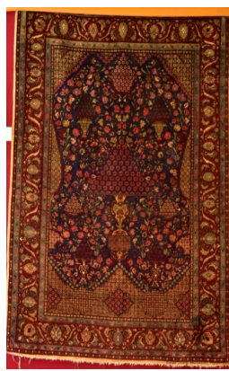

1. फ़ारसी कालीन

अभिलेख संख्या: XXVI-1
मखमली सतह वाला प्रार्थना कालीन, जिसके मध्य भाग में फूलदान और पुष्प पौधों के डिज़ाइन बने हुए हैं। पुष्प आकृतियों के चारों ओर पाँच किनारियाँ (बॉर्डर) हैं। प्रमुख रंग नीला, लाल, हरा और सफेद हैं। इसमें कुल पाँच किनारियाँ हैं। यह 19वीं शताब्दी का है और इसका उद्गम फ़ारस (पर्शिया) से हुआ है। फ़ारसी गलीचे और कालीन विभिन्न प्रकारों में एक साथ बुने जाते थे — घुमंतू जनजातियों, गाँवों और नगरों की कार्यशालाओं, तथा शाही दरबार के निर्माण केन्द्रों द्वारा। इस प्रकार, ये विविध और समानांतर परंपराओं का प्रतिनिधित्व करते हैं तथा ईरान के इतिहास, फ़ारसी संस्कृति और वहाँ के विभिन्न समुदायों को प्रतिबिंबित करते हैं। हालाँकि “फ़ारसी कालीन” शब्द का उपयोग आमतौर पर ढेर-बुने हुए वस्त्रों के लिए किया जाता है, परंतु इसमें सपाट-बुने हुए कालीन और गलीचे भी शामिल हैं, जैसे किलिम प्रिंट, सौमक तकनीक, और सुज़ानी जैसे कढ़ाईदार वस्त्र।
۱. ایرانی قالین
Acc No: XXVI-1
یہ مخملی نماز کا قالین ہے، جس کے درمیان میں گلدان اور پھولوں کے پودے کے نقش و نگار ہیں۔ گھیر میں پانچ بارڈر ہیں جو پھولوں کے نقش و نگار کے اردگرد بنائے گئے ہیں۔ نمایاں رنگ نیلا، سرخ، سبز اور سفید ہیں۔ یہ قالین انیسویں صدی کاہے اور اس کی ابتداء ایران سے ہوئی۔ ایرانی قالین اور غالیچہ مختلف اقسام میں دیہاتی قبیلوں، گاؤں اور شہر کی ورکشاپس، اور شاہی دربار کے کارخانوں میں بیک وقت بنائے جاتے تھے۔اس طرح یہ قالین متنوع اور ہم عصر روایات کی نمائندگی کرتے ہیں اور ایران کی تاریخ، فارسی ثقافت، اور مختلف عوام کی عکاسی کرتے ہیں۔ اگرچہ ایرانی قالین کی اصطلاح عام طور پر اون والے قالین کے لیے استعمال ہوتی ہے، تاہم اس میں ہموار بنائے ہوئے قالین اور گلیچے بھی شامل ہیں، جیسے کیلیم پرنٹ، سومک تکنیک، اور سوزانی کڑھائی دار کپڑے،
۱. ایرانی قالین
Acc No: XXVI-1
یہ مخملی نماز کا قالین ہے، جس کے درمیان میں گلدان اور پھولوں کے پودے کے نقش و نگار ہیں۔ گھیر میں پانچ بارڈر ہیں جو پھولوں کے نقش و نگار کے اردگرد بنائے گئے ہیں۔ نمایاں رنگ نیلا، سرخ، سبز اور سفید ہیں۔ یہ قالین انیسویں صدی کاہے اور اس کی ابتداء ایران سے ہوئی۔ ایرانی قالین اور غالیچہ مختلف اقسام میں دیہاتی قبیلوں، گاؤں اور شہر کی ورکشاپس، اور شاہی دربار کے کارخانوں میں بیک وقت بنائے جاتے تھے۔اس طرح یہ قالین متنوع اور ہم عصر روایات کی نمائندگی کرتے ہیں اور ایران کی تاریخ، فارسی ثقافت، اور مختلف عوام کی عکاسی کرتے ہیں۔ اگرچہ ایرانی قالین کی اصطلاح عام طور پر اون والے قالین کے لیے استعمال ہوتی ہے، تاہم اس میں ہموار بنائے ہوئے قالین اور گلیچے بھی شامل ہیں، جیسے کیلیم پرنٹ، سومک تکنیک، اور سوزانی کڑھائی دار کپڑے،
۱. ایرانی قالین
Acc No: XXVI-1
یہ مخملی نماز کا قالین ہے، جس کے درمیان میں گلدان اور پھولوں کے پودے کے نقش و نگار ہیں۔ گھیر میں پانچ بارڈر ہیں جو پھولوں کے نقش و نگار کے اردگرد بنائے گئے ہیں۔ نمایاں رنگ نیلا، سرخ، سبز اور سفید ہیں۔ یہ قالین انیسویں صدی کاہے اور اس کی ابتداء ایران سے ہوئی۔ ایرانی قالین اور غالیچہ مختلف اقسام میں دیہاتی قبیلوں، گاؤں اور شہر کی ورکشاپس، اور شاہی دربار کے کارخانوں میں بیک وقت بنائے جاتے تھے۔اس طرح یہ قالین متنوع اور ہم عصر روایات کی نمائندگی کرتے ہیں اور ایران کی تاریخ، فارسی ثقافت، اور مختلف عوام کی عکاسی کرتے ہیں۔ اگرچہ ایرانی قالین کی اصطلاح عام طور پر اون والے قالین کے لیے استعمال ہوتی ہے، تاہم اس میں ہموار بنائے ہوئے قالین اور گلیچے بھی شامل ہیں، جیسے کیلیم پرنٹ، سومک تکنیک، اور سوزانی کڑھائی دار کپڑے،
১. পারস্য দেশীয় কার্পেট
Acc No: XXVI-1
মখমলের মসৃণ તલે তৈরি একটি প্রার্থনা গালিચા বা কার্পেট, যার ঠিক মাঝখানে রয়েছে একটি অলংকৃত ফুলদানি ও পুষ্পશોભિત বৃক্ষের নকશા। এই কেন্দ্রীয় নকશાটিকে ঘিরে রয়েছে শৈল্পিক কারুকার্যখচিত পাঁচটি সুবিন্যস্ত সীমানা। কার্পেটটিতে মূলত নীল, লাল, সবুজ এবং সাদা—এই চারটি রঙের প্রাধান্য লক্ষ্য করা যায়। এই কার্পেটটির চারপাশ ঘিরে রয়েছে পাঁচটি সুবিন্যস্ত সীমানা। এটি ঊনবিংশ শতাব্দীর একটি প্রাচীন নিদর্শন, যার উৎপত্তি হয়েছিল পারস্য থেকে। সেই সময়ে পারস্যের বিভিন্ন ধরনের মাদুর ও কার্পেটগুলো যাযাবর উপজাতি, গ্রাম ও শহরের কর্মશાলা এবং রাজকীয় দরবারের কারখানায় সমানভাবে বোনা হতো। এই শিল্পকর্মগুলো পারস্যের বিવિધ ও সমান্তরাল ঐতিহ্যের প্রতিনিধিত্ব করে এবং ইরানের ইতিহাস, সংস্কৃতি ও তার বৈচিত্র্যময় জনগোষ্ঠীর জীবনবোধকে প্রতিফলিত করে। যদিও 'পারস্য দেশীয় কার্পেট' বলতে মূলত রোঁয়াযুক্ত বা পুরু বুননের বস্ত্রকে বোঝায়, তবে এর মধ্যে সমতল বুননের কার্পেট جیسے— কিলিম প্রিন্ট, সুমাক পদ্ধতি এবং সুজানি-র মতো সূক্ষ্ম সূচিকর্ম বা এমব্রয়ডারি করা বস্ত্রগুলিও অন্তর্ভুক্ত।
૧. પર્સિયન જાજમ
Acc No: XXVI-1
પ્રાર્થનાના માટેનો કાર્પેટ, મખમલી સપાટી સાથે, જેમાં મધ્યમાં વાસી અને ફૂલવાળા છોડની નકશીઓ છે. ફૂલવાળા ડિઝાઇનોની આસપાસ પાંચ બોર્ડર છે. મુખ્ય રંગો નીલો, લાલ, લીલો અને સફેદ છે. આ કાર્પેટ 19મી સદીનું છે અને તેનું ઉત્પત્તિ પારસ (પર્શિયા)માં થઈ છે. પારસી રગ અને કાર્પેટોના વિવિધ પ્રકારનો નિર્માણ એક સાથે ગામ અને નગરના વર્કશોપમાં ઘુમંતુ કબીલાઓ દ્વારા તેમજ શાહી દરબારમાં કાર્યશાળાઓમાં કરવામાં આવતો. આ રીતે, તેઓ વિવિધ પરંપરાઓના સહસાંમયીક શૃંખલાઓને પ્રતિબિંબિત કરે છે અને ઇરાન, પારસી સંસ્કૃતિ અને તેની વિવિધ જનજાતિઓના ઇતિહાસને દર્શાવે છે. “પારસી કાર્પેટ” શબ્દ સામાન્ય રીતે પાઇલ-વવન (pile-woven) કાપડ માટે વપરાય છે, પરંતુ તેમાં ફ્લેટ-વવન કાર્પેટ અને રગો જેમ કે કિલિમ પ્રિન્ટ, સોમાક ટેકનિક અને સુઝાની જેવી કઢાઇવાળી ટેક્સટાઈલ્સ પણ સામેલ છે.
1. ಪರ್ಶಿಯನ್ ಕಾರ್ಪೆಟ್
Acc No: XXVI-1
ಮಧ್ಯದಲ್ಲಿ ಹೂದಾನಿ ಮತ್ತು ಹೂವಿನ ಗಿಡಗಳ ವಿನ್ಯಾಸಗಳನ್ನು ಹೊಂದಿರುವ, ವೆಲ್ವೆಟ್ ಮೇಲ್ಮೈಯಿಂದ ಕೂಡಿದ ಅದ್ಭುತವಾದ ಪ್ರಾರ್ಥನಾ ರತ್ನಗಂಬಳಿ ಇದಾಗಿದೆ. ಈ ಹೂವಿನ ವಿನ್ಯಾಸಗಳ ಸುತ್ತಲೂ ഐದು ಸುಂದರವಾದ ಅಂಚುಗಳನ್ನು ಇದು ಹೊಂದಿದೆ. ಇದರಲ್ಲಿ ನೀಲಿ, ಕೆಂಪು, ಹಸಿರು ಮತ್ತು ಬಿಳಿ ಬಣ್ಣಗಳು ಪ್ರಮುಖವಾಗಿ ಎದ್ದು ಕಾಣುತ್ತವೆ. ಪರ್ಷಿಯಾ ದೇಶದಲ್ಲಿ ರೂಪುಗೊಂಡಿರುವ ಈ ರತ್ನಗಂಬಳಿಯು 19ನೇ ಶತಮಾನದಷ್ಟು ಹಳೆಯದಾಗಿದೆ. ವಿವಿಧ ಬಗೆಯ ಈ ಪರ್ಷಿಯನ್ ರತ್ನಗಂಬಳಿಗಳು ಮತ್ತು ಜಮಖಾನೆಗಳನ್ನು ಅಲೆಮಾರಿ ಬುಡಕಟ್ಟು ಜನಾಂಗದವರು, ಹಳ್ಳಿ ಹಾಗೂ ಪಟ್ಟಣದ ಕಾರ್ಯಾಗಾರಗಳಲ್ಲಿ, ಮತ್ತು ರಾಜಮನೆತನದ ಕಾರ್ಖಾನೆಗಳಲ್ಲಿಯೂ ಏಕಕಾಲದಲ್ಲಿ ನೇಯುತ್ತಿದ್ದರು. ಹಾಗಾಗಿ, ಇವು ವಿವಿಧ ಹಾಗೂ ಸಮಕಾಲೀನ ಸಂಪ್ರದಾಯಗಳನ್ನು ಪ್ರತಿನಿಧಿಸುತ್ತವೆ, ಜೊತೆಗೆ ಇರಾನ್ ದೇಶದ ಇತಿಹಾಸ, ಪರ್ಷಿಯನ್ ಸಂಸ್ಕೃತಿ ಮತ್ತು ಅಲ್ಲಿನ ವೈವಿಧ್ಯಮಯ ಜನರನ್ನು ಬಿಂಬಿಸುತ್ತವೆ. "ಪರ್ಷಿಯನ್ ರತ್ನಗಂಬಳಿ" ಎಂಬ ಪದವು ಸಾಮಾನ್ಯವಾಗಿ ರಾಶಿ-ನೇಯ್ದ ಜವಳಿಗಳನ್ನು ಸೂಚಿಸುತ್ತದೆಯಾದರೂ, ಇದು ಕಿಲಿಮ್ ಮುದ್ರಣದಂತಹ ಚಪ್ಪಟೆ-ನೇಯ್ದ ಜಮಖಾನೆಗಳು, ಸೌಮಕ್ ತಂತ್ರ, ಹಾಗೂ ಸುಜಾನಿ ಯಂತಹ ಕಸೂತಿ ಬಟ್ಟೆಗಳನ್ನೂ ಸಹ ಒಳಗೊಂಡಿದೆ.
୧. ପାର୍ସିଆ ଗାଲିଚା
Acc No: XXVI-1
ମଖମଲ ପୃଷ୍ଠ ସହିତ ପ୍ରାର୍ଥନା କାର୍ପେଟ୍ ଯାହା ମଝିରେ ଫୁଲଦାନୀ ଏବଂ ଫୁଲ ଗଛ ଡିଜାଇନ୍ ଅଛି। ଫୁଲ ଡିଜାଇନ୍ ଚାରିପାଖରେ ପାଞ୍ଚଟି ସୀମା। ପ୍ରମୁଖ ରଙ୍ଗ ହେଉଛି ନୀଳ, ଲାଲ, ସବୁଜ ଏବଂ ଧଳା। ଏହାର ଚାରିପାଖରେ ପାଞ୍ଚଟି ସୀମା ଅଛି। ଏହା 19 ଶତାବ୍ଦୀର। ଏହା ପାରସ୍ୟରୁ ଉତ୍ପତ୍ତି ହୋଇଛି। ଗ୍ରାମ ଏବଂ ସହର କର୍ମଶାଳାରେ ଯାଯାବର ଜନଜାତି ଏବଂ ରାଜ ଦରବାର କାରଖାନା ଦ୍ୱାରା ସମାନ୍ତରାଳ ଭାବରେ ପାରସ୍ୟ ଗାଲିଚା ଏବଂ ବିଭିନ୍ନ ପ୍ରକାରର କାର୍ପେଟ୍ ବୁଣାଯାଇଥିଲା। ଏହିପରି, ସେମାନେ ବିବିଧ, ଏକକାଳୀନ ପରମ୍ପରାର ରେଖା ପ୍ରତିନିଧିତ୍ୱ କରନ୍ତି ଏବଂ ଇରାନ, ପାରସ୍ୟ ସଂସ୍କୃତି ଏବଂ ଏହାର ବିଭିନ୍ନ ଲୋକଙ୍କ ଇତିହାସକୁ ପ୍ରତିଫଳିତ କରନ୍ତି। ଯଦିଓ "ପାରସ୍ୟ କାର୍ପେଟ୍" ଶବ୍ଦଟି ଗଦା - ବୁଣା ବସ୍ତ୍ର, ଫ୍ଲାଟ-ବୁଣା କାର୍ପେଟ୍ ଏବଂ କିଲିମ୍ ପ୍ରିଣ୍ଟ୍ ପରି ଗାଲିଚା, ସୌମାକ୍ କୌଶଳ ଏବଂ ସୁଜାନି ପରି କାରିଗରୀ ତନ୍ତୁକୁ ବୁଝାଏ।
1. पर्शियन गालिचा
Acc No: XXVI-1
मखमली पृष्ठभाग असलेला प्रार्थना गालिचा, ज्याच्या मध्यभागी फुलदाणी आणि फुलझाडांच्या नक्षी आहेत. फुलांच्या आकृत्यांभोवती पाच किनारी (बॉर्डर) आहेत. प्रमुख रंग निळा, लाल, हिरवा आणि पांढरा आहेत. यात एकूण पाच किनारी आहेत. हा १९व्या शतकातील असून याचे उगमस्थान पर्शिया आहे. पर्शियन गालिचे आणि रग विविध प्रकारांत एकत्र विणले जात असत — भटक्या जमाती, खेडी आणि शहरांतील कार्यशाळा, तसेच राजदरबाराच्या निर्मितीकेंद्रांकडून. अशा प्रकारे, ते विविध आणि समांतर परंपरांचे प्रतिनिधित्व करतात आणि इराणचा इतिहास, पर्शियन संस्कृती व तेथील विविध समुदायांचे प्रतिबिंब दाखवतात. जरी “पर्शियन गालिचा” हा शब्द सामान्यतः ढीग-विणलेल्या वस्त्रांसाठी वापरला जात असला, तरी त्यात सपाट-विणलेले गालिचे आणि रगही समाविष्ट आहेत, जसे किलिम प्रिंट, सौमक तंत्र, आणि सुझानीसारखी भरतकाम केलेली वस्त्रे.
1. പേർഷ്യൻ പരവതാനി
Acc No: XXVI-1
വെൽവെറ്റ് പ്രതലമുള്ള പ്രാർത്ഥനാ പരവതാനി, അതിന്റെ മധ്യഭാഗത്ത് പൂപ്പാത്രത്തിന്റെയും പൂച്ചെടികളുടെയും ഡിസൈനുകൾ ഉണ്ട്. പൂക്കളുടെ രൂപങ്ങൾക്ക് ചുറ്റും അഞ്ച് അതിരുകൾ (ബോർഡർ) ഉണ്ട്. പ്രധാന നിറങ്ങൾ നീല, ചുവപ്പ്, പച്ച, വെള്ള എന്നിവയാണ്. ഇതിൽ ആകെ അഞ്ച് അതിരുകളുണ്ട്. ഇത് 19-ാം നൂറ്റാണ്ടിലേതാണ്, ഇതിന്റെ ഉത്ഭവം പേർഷ്യയിൽ നിന്നാണ്. പേർഷ്യൻ പരവതാനികളും റഗ്ഗുകളും വിവിധ തരങ്ങളിലായി ഒരുമിച്ച് നെയ്യപ്പെട്ടിരുന്നു — നാടോടി ഗോത്രങ്ങൾ, ഗ്രാമങ്ങളിലെയും നഗരങ്ങളിലെയും ശില്പശാലകൾ, രാജസദസ്സിന്റെ നിർമ്മാണ കേന്ദ്രങ്ങൾ എന്നിവയാൽ. അങ്ങനെ, അവ വൈവിധ്യമാർന്നതും സമാന്തരവുമായ പാരമ്പര്യങ്ങളെ പ്രതിനിധീകരിക്കുകയും ഇറാന്റെ ചരിത്രം, പേർഷ്യൻ സംസ്കാരം, അവിടത്തെ വിവിധ സമൂഹങ്ങൾ എന്നിവ പ്രതിഫലിപ്പിക്കുകയും ചെയ്യുന്നു. “പേർഷ്യൻ പരവതാനി” എന്ന പദം സാധാരണയായി കൂമ്പാരം നെയ്ത വസ്ത്രങ്ങൾക്കാണ് ഉപയോഗിക്കുന്നതെങ്കിലും, കിലിം പ്രിന്റ്, സൗമക് സാങ്കേതികവിദ്യ, സുസാനി പോലുള്ള എംബ്രോയിഡറി ചെയ്ത വസ്ത്രങ്ങൾ എന്നിങ്ങനെ പരന്ന് നെയ്ത പരവതാനികളും റഗ്ഗുകളും ഇതിൽ ഉൾപ്പെടുന്നു.